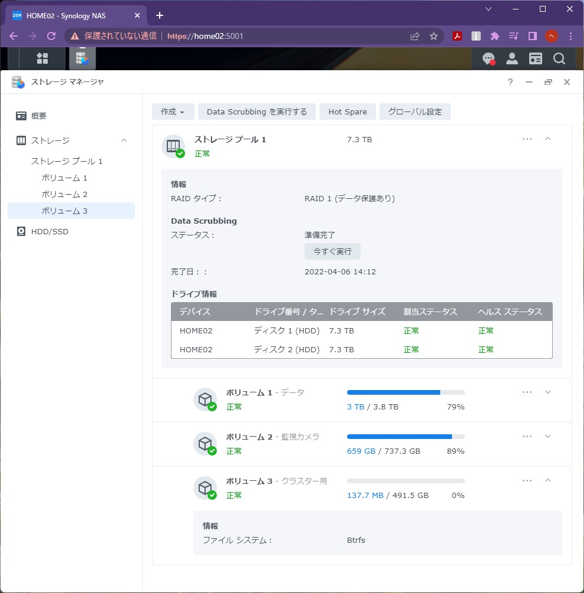

Storage #
検討 #
用途 #
- On-Premise Kubernetes ClusterでReadWriteManyのPersistentVolumeを使う
条件 #
監視カメラ対応 #
- TP-Link Tapo C310の映像を録画したいので
CSI (Container Storage Interface) #
- On-Premise Kubernetes ClusterでReadWriteManyのPersistentVolumeを使いたいので
省スペース #
- 設置スペースが狭いので
静音 #
- 自宅に設置するので
安価 #
- 予算が少ないので
省電力 #
- 自宅に設置するので
候補 #
Synology DiskStation DS220+ #
- DS220jより高スペック
- DS220jより高価
Synology DiskStation DS220j #
- DS220+より低スペック
- DS220+より安価
結果 #
Synology DiskStation DS220+ #
CSI Driverを使う場合、Synology NASか
NFS Serverに絞られた。
ROOK Cephも考えたが、ClusterとStorageは分離したかった。
監視カメラも設置したかった。
もっと高スペックも調べたが、予算とスペックでDS220+がFITした。
- Intel Celeron J4025
- 2GB + 4GB(追加)
- 165 x 108 x 232.2 mm
- 静音
- 40,300円
40,300円分のAmazonギフト券もその時に考えられる最安の方法で購入した記憶があるが思い出せない。
設定 #
Strage Pool & Volume #
Cluster専用のVolumeを作成するのがベストです。 
フォルダ管理するつもりで、全てのStorageで1つのVolumeを作成していたので再作成しました。
容量が多いとファイルを逃がすのも工夫が必要になります。